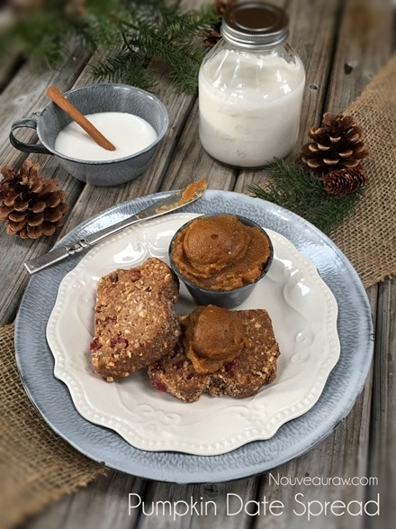

Pumpkin Date Spread

~ raw, vegan, gluten-free, nut-free ~
This spread was inspired by Lindsay, who left a message for me about the Maple Pumpkin Butter Spread. Lindsay can’t eat nuts, seeds or coconut and she asked what could be used instead of the coconut butter/manna. I thought long and hard about it; I wanted to make it work for her.
This morning, I stumbled into the kitchen with bed-head at its best, and I had one of those, “aah-haa” moments! DATES! Sometimes when we over think things we miss the obvious. Dates not only provide sweetness, but they are also excellent for thickening recipes.
I am very picky about the dates that I use in my raw recipes… I am a fan of Medjool dates. They are sweet, tender, exceptionally large compared to other dried dates. Medjool dates can replace sugar or honey, they taste like caramel, and have a deeper, more complex flavor than many other sweeteners. From a health standpoint, they are a good source of fiber and contain high levels of potassium, magnesium, copper, and manganese.
To select the best Medjool dates, look for ones that are organically grown and not treated with sulfur, which is used to preserve their color. Medjools have a wrinkly skin, dense but soft to the touch. Medjools will sometimes form a white powder film on the skin; these are just the natural sugars coming to the surface, which does not affect the flavor or quality.
Place the dates into an airtight container and leave at room temperature. They can be stored in this manner for up to one week. Move the container of dates into the refrigerator to store for six months. Freeze the dates in an airtight container if you want to store your dates for up to 1 year. If you store them in the fridge or freezer, please give them time to warm up to room temperature before using.
So, here you go Lindsay and all of you who can’t eat coconut butter… I present to you…
 Ingredients:
Ingredients:
Yields 1 cup
- 1/2 cup date paste
- 1/2 cup pumpkin puree
- 1/2 tsp pumpkin spice
- 1 pinch of sea salt
Preparation:
- In the blender, combine the date paste, pumpkin puree, pumpkin spice, and salt. Blend until smooth.
- If you don’t have pumpkin spice, you can make your own. Yields 8 teaspoons of Pumpkin Spice: 4 tsp ground cinnamon, 2 tsp ground ginger, 1 tsp Allspice and 1 tsp nutmeg. Mix ingredients in a bowl. Store in an airtight container.
- Store in an airtight container in the fridge. Should be good for about 5-7 days.
© AmieSue.com